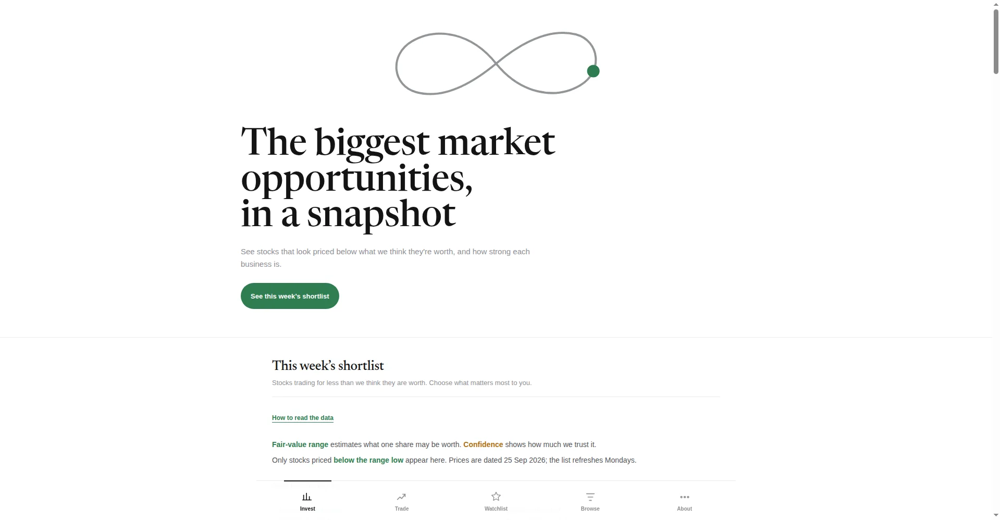
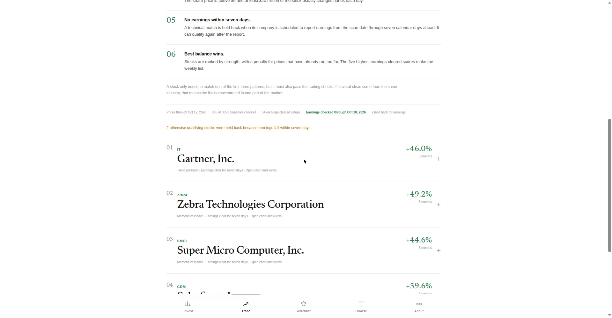
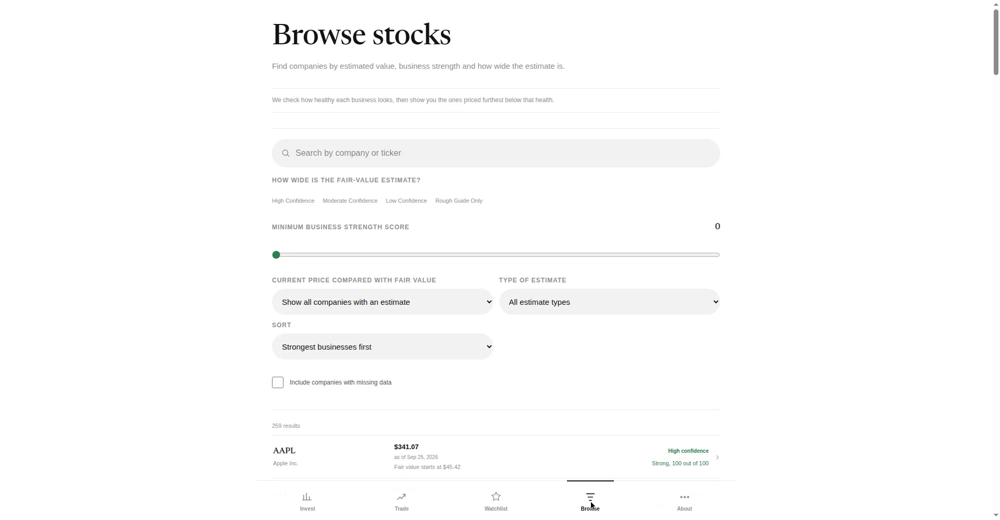
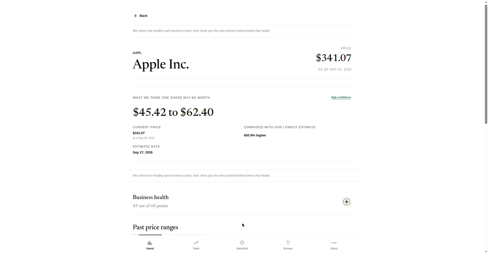

This page is a snapshot of the Stock Picker demo account, captured on 13 October 2026.
The full app runs privately, so this frozen copy shows the main screens with sample data.
Prices on the screens are dated 25 September to 12 October 2026, and nothing here updates live.

InvestThe weekly shortlist. Companies priced below their estimated fair value, each with a confidence rating on the estimate.

TradeWeekly technical setups that pass the trading checks, earnings included. Prices through 12 October 2026, with 305 of 305 companies checked.

BrowseThe company explorer. Search and filter 259 companies by fair-value estimate, business strength, and estimate type.

Company pageOne share's estimated fair-value range, business health score, and past price ranges. Apple Inc. shown, priced as of 25 September 2026.